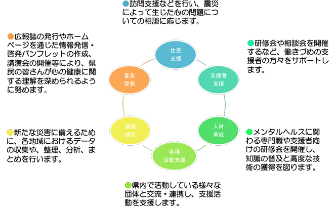

TEL. 022-200-9006
〒980-0014 宮城県仙台市青葉区本町2-3-10 仙台本町ビル
XXXX様の展開している事業について
東日本大震災により、心理的影響を受けた県内在住者の全てを心のケアの対象者としてとらえ、県民の方々がコミュニティの中で、一日も早く安心して生活できるよう、地域の実情に合わせた支援事業を行います。

今回対象となったXXX様が利用されているシステム概要
・業務報告書システム
・３拠点（仙台、石巻、気仙沼）のそれぞれでAccessにデータを入力する
・月次でセンター（仙台）にAccessを集約し、データ統合後、再度各拠点に最新版Accessを配信する
S社がシステム運用サポートしていた時の状況は以下の通り
・システム担当者は月１回程度発生するシステムトラブルの対応に追われ、本来業務に時間を使えない
・システム改修時、S社の暗い顔をしたSEが来て、予想通り不具合の発生、スケジュール遅延を度々
このままS社に委託していてはまずい、という思いはあったものの、他のシステム開発会社を探そうにも、何から手を付けたら良いのか分からなかったので、１年以上不満を抱えたまま運用していた状況でした。
そうしている間にもデータ量が増えたことにより、システムのレスポンスがどんどん悪化し、まさに待ったなしの状況に追い込まれていったのです。
始めはホームページのちょっとした改修をお願いしたんです。大学の同期に、ホームページ改修をお願いできるような会社を紹介してくれないか、と相談したところ、PRO&BSCのウェブソリューション事業部を紹介されました。ホームページ改修の打合せのついでに、Accessの改修をお願いできないか？と聞いてみたところ、他事業部（ユーザーアプリケーション事業部）が対応できる、ということで今に繋がりました。
当初はAccessの改修に留める予定だったのですが、調査を依頼したところ
・現時点で検索画面のレスポンスが30秒以上
・数年以内にデータ量の増加が原因で、システムエラーが発生する
という調査結果をPRO&BSC社よりいただきました。
この調査報告と同じタイミングで、WebPerformerを使ってシステムの全面見直しの提案をいただき、センター側で検討した結果、次のような3段階に分けてシステムのリプレースを行うことに決まりました。
1段階目：利用者の台帳機能のみWebアプリに移行
2段階目：台帳機能を使う業務報告書のみWebアプリに移行
3段階目：その他の業務報告書をWebアプリに移行
WebPerformerの開発は初めて、と始めに宣言されていたので、どういった進め方をするのか、不安でした。
設計フェーズは1ヶ月だったのですが、コミュニケーション手段はメールでしたが、大量のメールのやり取りをしていく中で、どれが最新版なのか、あの件はどこでメールしていたっけ？、ってなり、PRO&BSCさんにどうにか改善できないか相談したんです。すると、次のような手法を提案していただきました。
①コミュニケーション手段 → サイボウズLive（無償利用版）
②ファイルサーバー → Google Drive
③プロトタイプ → Web Performerを利用し、Amazon Web Serviceに即プロトタイプを展開
①サイボウズLive
今や誰もが知っているサイボウズのグループウェア。サイボウズLiveはその無料利用可能版です。今回はプロジェクトメンバーが無償利用可能枠の20名以下だったので、問題なく利用出来ました。打合せスケジュールや、双方のTODOを中心に利用しました。目を通した書き込みには「イイネ」をクリックすることをルール化することで、双方のメッセージ確認状況を確認し合えるようにしたので、コミュニケーションに関しては全く問題なく行えました。
②Google Drive
実はほとんど使ったことがなかったのですが、こんなに便利なものだとは思いませんでした。簡単に言うと、クラウド上のファイルサーバーとも表現できるのですが、双方で共有すべきファイルは全てGoogle
Drive上に配置するルールとしました。さらに、サイボウズLiveにはファイルへのリンクのみ記載します。こうすることで、このファイルって最新版？、ということが発生しなくなりました。
③Web Performer
このツールのお陰でアプリケーションの品質は向上しました。打合せ後数日すると、AmazonWebServiceにもう画面が出来上がってくるんです。その次の打合せで実際に動く画面を見ながら改善、調整を行い、ブラッシュアップを重ねていきます。設計フェーズが終わる頃には画面も同時に出来上がっている、という。
これまでは設計フェーズが完了しても動く画面を見ることは出来ず、しばらく経ってから動く画面を見れるようになり、その画面を見て初めて、「コレじゃない！」と、、、（笑）
何度も何度も微妙な調整、改善をPRO&BSCさんにはお願いしてしまいましたが、それがあったからこそ、現場利用者の利便性を考えた、納得の行くアプリケーションが作れた、と考えています。
当初WebPerformerの良さ、って開発速度が速い＝価格を安く抑えられる、だと思っていたのです」とは、今回開発責任者のXXXさん。
「しかし、高速で画面を作ってレビューしていただいて、高速で修正してレビュー、を繰り返す中で、あぁ、これは開発工数はあまり抑えられないな、と気づきました（笑）。」
ZZZZZZZZZ
YYYYYYYYYY
ZZZZZZZZZ
YYYYYYYYYY
ZZZZZZZZZ
〒980-0014
宮城県仙台市青葉区本町2-3-10
仙台本町ビル
TEL 022-200-9006
FAX 022-721-3503
URL http://nanairo-inc.jp
採用サイト https://nanairo-inc.jp/graduate_recruitment
Mail
ishimori_yuzuru☆nanairo-inc.jp
担当 石森